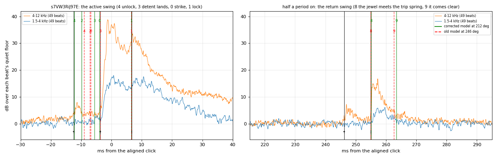
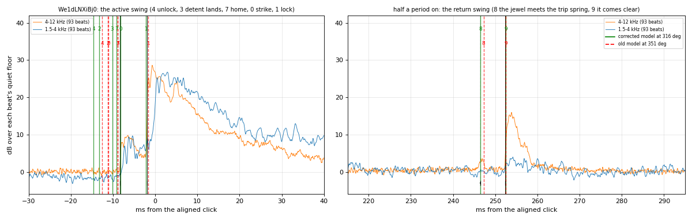
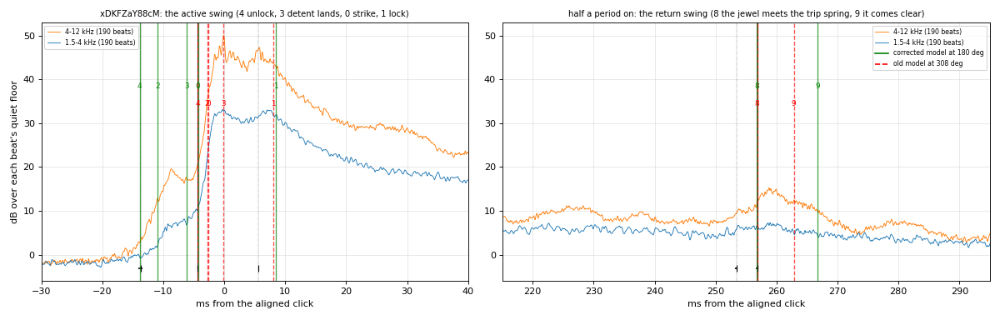
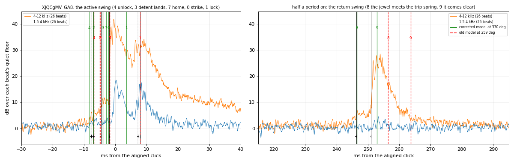
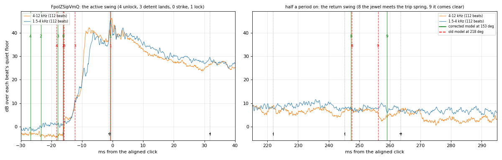
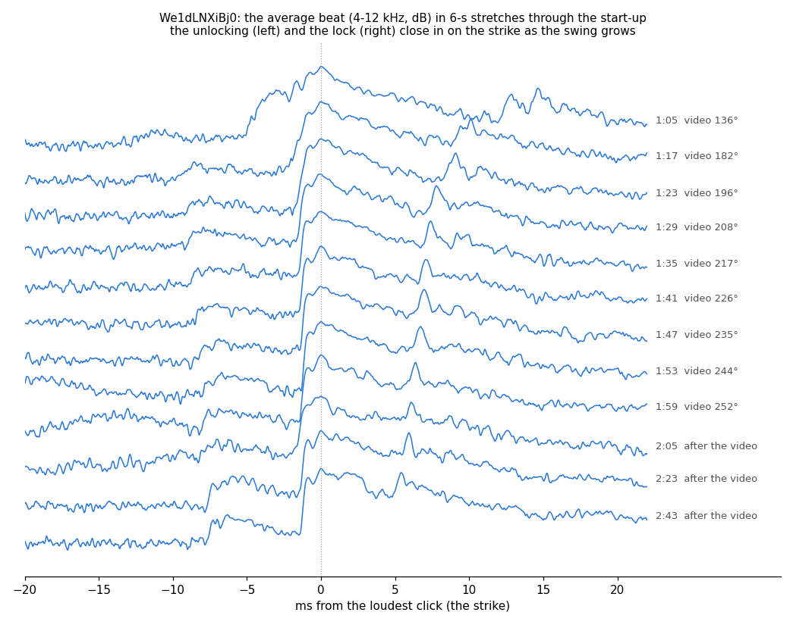
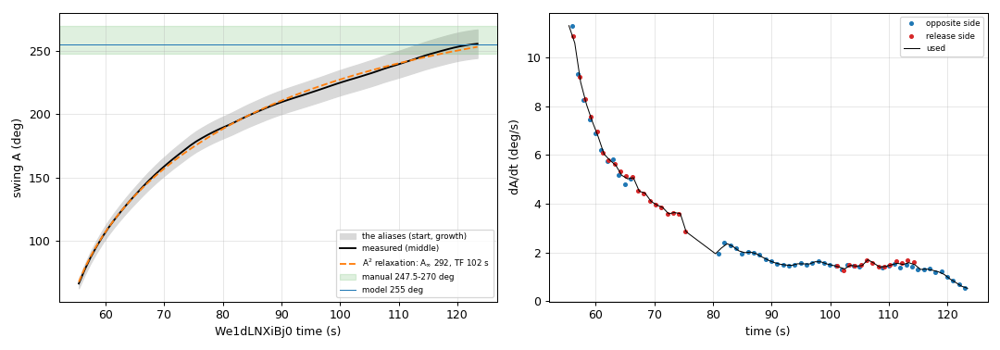

Marine Chronometer model · external validation · 11 October 2026 · with it: would a chronometer made to the model run?
Does the model behave like a real Hamilton Model 21?
The model already agreed with itself and with the 1948 manual's adjustment figures: that is parity, not proof. Here it is compared with recordings of real, running Model 21s it was never fitted to, by two independent tests: the sound (the timing of the clicks inside each beat) and the picture (the balance's swing read frame by frame).
What is tested
A detent escapement makes its sounds once per oscillation of the balance (every 0.5 s). On the active swing: the discharge jewel meets the passing spring and lifts the detent (unlocking), the wheel is released, the detent lands back on its stop, the escape wheel's tooth strikes the impulse jewel, and the next tooth locks on the stone. Half a period later, on the return swing, the jewel meets the trip (gold) spring and the spring comes clear.
The times between these clicks depend on the balance's swing (a larger swing crosses the escapement's angles faster) and on how the escape wheel moves once released. That is exactly what release 2.21.00 changed: the old model treated the wheel as a gear that lands on the jewel at once; the corrected one lets it start from rest and chase the jewel. The two make different predictions:
| At a swing of 255° | Corrected model (dynamics.js) | Old model (39d6919) |
|---|---|---|
| Unlocking → strike | 7.2 ms | 2.1 ms |
| Strike → lock | 8.5 ms | 12.9 ms |
| Their ratio (does not depend on the swing) | ≈ 0.85 (0.77–0.89 over 190–330°) | 0.16 |
Both intervals shrink as the swing grows, so one interval alone reads as a swing. Their ratio doesn't, so hearing all three clicks tells the models apart at any swing.
The recordings
YouTube videos of real Model 21s, catalogued in the repository's References/VIDEOS.md. The clips below are short excerpts kept locally for listening;
the slowed ones are one second stretched 8× without changing pitch, so the separate clicks of one beat can be heard.
| Video | What it is | Listen | Used for |
|---|---|---|---|
s7VW3RiJ97ERM Watch & Clock, 30 s, 1080p | The escapement running, close; the cleanest sound | one beat, 8× slower: | Sound: the best test of the models |
We1dLNXiBj0bunnspecial, Part 1 of 3, 3 min, 720p | Balance visible through the plate's cutouts; at rest, then started by hand at 0:55; speech over it | the start (0:54–1:06): running (2:20–2:30): one beat, 8× slower: | Sound and video: the cross-check |
xDKFZaY88cMJames Martin, 3 min, 1080p | A unit running in an echoing room; the video is edited | Sound: rough | |
XJQCgMV_GA8Deafboy, 75 s | Keyhole view of the locking stone; sound only in the first 13 s | Sound: inconclusive | |
FpolZSipVmQpefkipefki, 68 s | Rollers seen from above, hand-held | Sound: inconclusive |

s7VW3RiJ97E 0:05: the escapement close up (picture blurred; the sound is clean).
We1dLNXiBj0 0:30: the balance's rim and screws show through the plate's two cutouts.Test 1: the sound (tools/acoustic.py)
Each recording's beats are averaged (each placed on the running average by cross-correlation; beats with speech or handling are rejected by their quiet floor), the clicks' onsets are found on the 4–12 kHz envelope in decibels (the case rings near 1 kHz, so lower bands blur), each with its spread over 200 bootstrap resamples of the beats. The model's events are then paired one to one with the onsets, the swing the only free parameter (then the beat error too), for both models.
s7VW3RiJ97E: the cleanest recording corrected model fits; old model can't

- Onsets at −12.44, −3.68 (the loudest), +6.63, +246.16 and +254.97 ms (±0.05–0.3 ms; 49 beats).
- The corrected model pairs four of them (unlocking, strike, lock, the trip spring met) at a swing of 212° (211–218°), χ² 0.8. Four intervals read separately all give 201–220°. With the beat error free too, all five onsets fit at 209° (205–213°), 12° out of beat.
- Measured ratio unlocking→strike / strike→lock: 8.76 / 10.31 = 0.85; corrected model at 212°: 0.83; old model: 0.16 at any swing. The old model's best fit leaves the loudest click unexplained (cost 34 against 22).
The other recordings

We1dLNXiBj0 from 2:08 (running, 93 beats). Two loud clicks 6.36 ms apart; on their own they fit
either as unlocking→strike (about 295°) or strike→lock (331°). The start-up below shows which.
xDKFZaY88cM: the room rings for 100 ms and hides the clicks after the loudest. Corrected model about 180° in beat,
209° with 3° beat error: rough, and the video is edited so its sound may be too.
XJQCgMV_GA8: only 24 beats (13 s of sound), several weak onsets on the loudest click's flank; corrected (269°) and old
(259°) fit about equally. Inconclusive.
FpolZSipVmQ: the loudest click is spread over 8 ms and no clear click is heard on the return swing; every fit pairs only two
or three clicks. Inconclusive.A real start: the best test (We1dLNXiBj0)
In We1dLNXiBj0 the balance stands still until 0:52, a stick turns it about 65° and lets go at 0:55.2, and the escapement builds the swing up over the next
minutes. The video measures that swing; the sound, read in 6-second stretches, shows the clicks moving as it grows. This turns one recording into a whole range of swings.

Strike → lock against the swing the video measures
Data table
From 1:23 to 2:05 the corrected model pairs the three clicks as unlocking, strike and lock with only the swing free, χ² ≈ 0 in all nine stretches, and the old model fits worse in every one. The measured points fall along the corrected curve's shape (and nowhere near the old one), but sit 6–14 % below it at the video's swing: equivalently, the sound reads a swing 15–30° above the video's from 1:20 on (the horizontal bars span the video's possible readings).
The swing through the start: video, sound, and the model
Data table
The video's swing (blue line; shaded: its possible readings, a screw hole apart) rises from 66° to 244–267° at 2:03 and is still rising about 1°/s. The sound's
swing (orange dots) agrees with it within 2–15° up to about 180°, then reads higher, and settles at about 295° (290–302°, eight stretches) after 2:10. The grey curves are the same start run in the model
(tools/startup.js): with the model's balance run-down TF = 67 s the swing builds up too fast and flattens too early (11.5–12.2° rms from the video at its best
drive; 14.5–16.7° at the 52 s it had until 12 October 2026); a run-down of 160 s or more, with the drive at 60–75 % of the model's torque, follows the video within 2.8–5.1° rms.
Is it the escape wheel's chase onto the impulse jewel? The clicks of each stretch, read on the video's swing rather than the model's timing (startup.js --chase), put the
strike at the balance angle where the model's tooth lands up to about 217° of swing (within 0.4°); above it the real strike stops moving (about −6.5°) while the model's tooth lands
later and later, 6.2° over 196–252°: its wheel, let go from rest, chases the jewel, so the model gives a small swing a little more of the escapement's work than a running one
(1.34 times at 60° against 255°; moved as the clicks move, about 1.24). That is not why the start is slow: the averaged build-up law, refitted with the work falling as the model's,
the clicks' or not at all, still wants TF 156–160, 136–142 or 104–106 s (each within 2° rms; 67 s misses by 5.7–10.1°), settling at 294–316°. No drive, inertia or give of the
train's teeth makes the landing stop moving; what does is open.
Test 2: the swing on video (tools/swing.py)
At 30 frames a second a 0.5 s oscillation has only 15 frames, and in mid-swing the balance turns about 100° per frame and is a blur. Near each turning point it is almost still, so those frames are nearly sharp. The tool finds the turning points by mirror symmetry (frames equally before and after a turn look alike), reads the screws' angle there, and measures how far each extreme moves from one turning point to the same side's two periods later.



- 256 ± 9° at 2:03.4, four possible readings 244, 252, 259, 267°: the start is known only modulo half a screw hole (7.5°), the growth modulo a hole (15°). 267° is the likeliest (its growth, 196.8°, is nearest the summed 191°). A +30° slip is unlikely (it needs a 9°/s burst in 4.8 s with no screws in view).
- This is a start, not a steady swing: a lower bound on this movement's running swing.
- Rejected, with the reasons in
swing.json:xDKFZaY88cM(edited: frames repeated and held),FpolZSipVmQ(rollers edge-on),s7VW3RiJ97E(5 s from above, panning),XJQCgMV_GA8,bEWF2ivi1Rg,R-DrJz1DYOY(no balance in view from above).
Do the two tests agree?
Data table
Yes, within their uncertainties, with the sound a little high. Through the start the two agree within 2–15° up to about 180°. Above, the sound reads 15° (the video's likeliest reading) to 30° (its middle) higher: about 1.5 σ of the sound's reading (±10° from ±0.3 ms) and one screw hole of the video's. The sound's running swing, about 295° (290–302°), sits inside the video's extrapolated 280–311°. If the excess is real, the model's strike-to-lock arc is about 6 % too long; these data can't separate that from the video's aliases.
Implications for the model
- The corrected escapement is right where it mattered. On real Model 21s the wheel catches the impulse jewel 7–9 ms after the unlocking, and the intervals follow the swing
as
dynamics.jscomputes them, through a whole start from 136° to 286°. The old kinematic wheel (strike 2 ms after the unlocking) is ruled out by the cleanest recording and by every stretch of the start. - Real swings vary from unit to unit. 212° on one movement, about 295° running on another (about 180–210° on a third, roughly). The manual's 247.5–270° and the model's 255° lie between: the model's swing is a reasonable middle, not a measured value for any one chronometer.
- Each movement has a beat error. The return swing's clicks fall a few milliseconds off where an in-beat balance puts them, differently in each recording: 5–12° out of beat when fitted. The model assumes a chronometer exactly in beat (the manual's adjustment); that is fine, but it means the sound can't test the trip spring's geometry or the shape of the discharge jewel's end (its back's radius).
- The balance loses its swing more slowly than the model says. A real start rises far more slowly than the model's 67 s run-down allows; the fit wants TF of at least about 120–160 s
(Q ≈ 750–1,000) with about 60–80 % of the model's drive, and gives no upper bound. That is beyond the 65–113 s the balance's parts allow in
physics.jswith the endstone's friction measured (32–62 s before it was). It is recorded inOPEN-QUESTIONS.md; the model is not changed on one hand-started movement whose absolute swing is known only to a screw hole. - The escape wheel reaches the jewel sooner than the model's at a running swing. The real strike stops moving with the swing from about 217°, the model's tooth lands later and later: a small difference in the escapement's work (1.24 against 1.34 times at 60°), not the cause of the slow start.
- If the sound's small excess is real, the model's arc from strike to lock is about 6 % too long (the strike a little early in angle, or the lock a little late).
Gaps, and what would close them
| Gap | Why it matters | What would close it |
|---|---|---|
| No steady swing seen on video without aliases | The video reading is known only to a 15° screw hole, which limits the sound–picture comparison to ~1.5 σ | A Model 21 running steadily with one balance feature in view from above (a timing weight, an arm's end) for a minute, on a tripod |
| The balance's free run-down never measured | Sets Q (the model's TF 67 s), the drive the train must give, and the build-up time; the start suggests ≥ 120–160 s (≥ 104 s whatever the escapement's chase) | A video of the balance swinging freely with the train held by the blocking screw, its swing timed until it stops |
| One clean recording decides old vs corrected outright | Elsewhere the unlocking is too quiet or the room too live to hear all three clicks | More close recordings with a still microphone, or a timegrapher (it hears the same clicks) |
| Which click is which, on a steady recording | Two loud clicks 6.4 ms apart read as about 295° or 331° depending on their names | A start (as in We1dLNXiBj0) or a contact microphone with a slowed-down video of the escapement in sync |
| Beat error confounds the return swing | Hides any test of the trip spring and the shape of the jewel's end | Video of the escapement's return swing at high frame rate, or a unit put exactly in beat first |
| Different movements, different states | Swings range 180–295°; mainspring, oil and adjustment are unknown | A timegrapher reading (swing, beat error, rate) on a serviced unit, fully wound |
| Recording artefacts | YouTube's Opus coding smears transients by up to ~1 ms (0.3 ms allowed per onset); the video in xDKFZaY88cM is edited | Original, uncompressed recordings |
Method, limits and files
- Sound:
python acoustic.py s7VW3RiJ97E We1dLNXiBj0 xDKFZaY88cM XJQCgMV_GA8 FpolZSipVmQ --write(about 4 min) andpython acoustic.py We1dLNXiBj0 --every 6 --from 0:56 --write(30 s). Onset: the level first 1.5 dB over its highest 4–2 ms before, on a rise reaching 2 dB; an onset of 3 dB or more in 80 % of resamples must be explained by the fit, a weaker one may be. Cost: χ² of the pairs + 4 for each model event unheard + 9 for each strong onset unexplained. Only intervals inside a beat are used: the recordings' clocks are good to tens of ppm, not to the rate. - Video:
python swing.py We1dLNXiBj0(7 s). Start in the model:node startup.js(about 8 min;--chase2 s). - Results in the repository (branch
claude/validation, not merged):tools/acoustic.json,acoustic_stretches.json,swing.json; the model README's "Checked against real chronometers",References/VIDEOS.md(Measurements, Methods),OPEN-QUESTIONS.md. - This report: built by
build_report.py --localoutside the repository, with audio excerpts and video frames; the copy in the repository (marine-chronometer-source/chronometer-working-model/verification/real-chronometers/) links to the videos instead.
Readings are cited by video ID and time. "Sure", "fairly sure", "rough" and "inconclusive" are stated per result in References/VIDEOS.md.